盾
Last Epoch · 守卫 · Void Knight
虚空骑士·盾投时间腐朽
BD 装备选型与制作全指南
终末野熊 × 遗忘骑士 × 乔尔曼 · 多套装混搭 · 持续伤体系深度解析
感谢 2神 的原创 BD 思路与深度解析
本攻略的 BD 核心机制与装备选型思路来源于 2神 — 最后纪元·虚空骑士：盾投时间腐朽 BD 完全指南，在此表示感谢。本站在此基础上对装备制作流程进行了逐项细化与补充。
装备总览
BD核心机制
本BD以盾牌投掷为核心技能，通过伤害转化为虚空后触发时间腐朽持续伤害体系。
核心循环为"投掷→迟缓覆盖→引爆腐朽"，冷却恢复速度是循环命脉，时间腐朽几率决定触发稳定性。
终末野熊的挽歌
头盔 · 已重铸
终末野熊的蔑视
胸甲 · 已重铸
阿波罗斯的命令
主手 · 传奇权杖
遗忘骑士之刃
副手 · 已重铸细剑
光阴锈蚀 / 不朽台钳
手套 · 传奇切换
乔尔曼的焦渴
腰带 · 已重铸
山之麓
鞋子 · 传奇
编织者的遗弃壳质
戒指 · 已重铸
传奇交织
戒指 · 传奇必备
遗忘骑士的挂坠
护身符 · 已重铸
破碎世界
遗物 · 传奇
金字塔祭坛
神像祭坛 · 掉落
多套装混搭核心
终末野熊（头盔+胸甲）+ 遗忘骑士（副手+护身符）+ 乔尔曼（腰带）+ 编织者（戒指）
依靠传奇交织戒指作为万能连接器，激活全部套装效果。
对这套BD最有用的伤害词缀
为什么必须"盾投转虚空"？——伤害类型转化与标签匹配
游戏中装备词缀的增伤效果，只有在其标签与技能标签匹配时才生效（模块二）。
盾牌投掷默认是物理伤害，但通过胸甲上的
100% 盾牌投掷基础伤害转化为虚空词缀，
技能的基础伤害类型变为虚空，获得虚空标签，此后所有"虚空伤害提高""虚空技能时间腐朽几率"等词缀才会生效。
转化只改变基础伤害类型，不影响异常状态或其他触发效果（模块五）。
☠️ 核心输出词缀
T7
+(55-90)% 虚空技能时间腐朽几率
头盔/胸甲核心前缀，决定腐朽触发稳定性
★
T7
+(88-114)% 几率施加 迟缓 于击中时
主手/副手必需后缀，400%+迟缓覆盖率的保证
★
T7
(28-32)% 提高冷却恢复速度
腰带/鞋子核心后缀，放逐冷却压缩至2.5秒内
★
—
100% 的 盾牌投掷基础伤害转化为虚空
胸甲核心机制词缀，T1即可，封印后腾出前缀位
★
⚡ 次要输出词缀
T5
(47-105)% 持续伤害提高
主手/副手前缀，提升腐朽总伤害
T5
(47-70)% 虚空伤害提高
护身符/副手前缀，通用虚空增伤
T5
+(13-14)% 时间腐朽几率
护身符前缀，辅助叠加腐朽触发率
🛡️ 核心生存词缀
T7
(0.9-1)% 的 护甲减伤效果也对持续伤害生效 自每10点属性总和
戒指1核心前缀，将护甲转化为对DoT的硬减伤
★
T5
(10-18)% 生命提高
胸甲/腰带后缀，3500+生命的基础保障
T5
+(126-150) 耐伤阈值
头盔后缀，配合低血减伤抵御猝死
T7
+(153-211) 生命
护身符后缀，大量生命值补足
套装重铸通用流程
📦 步骤一：获取套装词缀碎片
1
前往编织秘境·雄伟大桥，突破防御工事后前往命运熔炉，分解套装装备获取对应部位词缀碎片。建议多攒一些再去，批量操作更高效。
—
或者将套装装备腐化后分解同样可获得词缀碎片，但注意有约 30% 失败概率。
🔩 步骤二：选择底材
2
选择崇高装备作为底材（T7最优，T6可用）。底材应自带高优先级词缀（T7/T6），且锻造潜能尽量高，否则后续步骤容易潜能不足。
🔓 步骤三：腾出一个空余前缀/后缀（三选一）
A
天选方案：底材天生只有3个词缀，空缺一个前缀/后缀位。打上一个低阶词缀再用 T1-T3 封印它即可（若锻造潜能较低，则不必封印）。
B
使用雕文·绝望封印一个现有词缀（低阶T1-T3成功率高，高阶失败率较高）。成功后，该词缀移至封印位，原位置空出。
C
使用符文·剥离随机移除一个词缀，返还对应数量碎片。四个词缀完全随机选择——靠天吃饭，同时注意潜能消耗。
🔧 步骤四：锻造套装词缀
4
在普通锻造台（按F），将套装词缀碎片打到空余位置上。此时装备会变为"已重铸"状态，获得对应套装效果。套装词缀T1即可激活效果，后续可用符文·浩劫随机提升至 T6/T7。
✨ 步骤五：优化其他词缀（可选浩劫）
5
使用混沌雕文、剥离符文等优化其他词缀为T5/T7。若希望套装词缀也达到高阶，可在4词缀满的状态下使用符文·浩劫，有机会将所有未封印词缀（含套装词缀）roll到更高阶。
头盔 — 终末野熊的挽歌（已重铸）
头盔 · 狮子重盔基底（推荐）
终末野熊的挽歌 — 已重铸
套装重铸
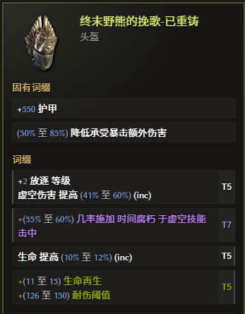
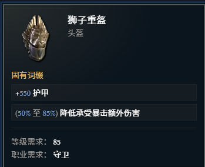
核心作用
提供关键的 T7 虚空技能时间腐朽几率 前缀，极大提升核心持续伤的触发稳定性。
作为"终末野熊"套装组件，配合其他部位激活强力套装效果。
前缀
T7
+(55-60)% 虚空技能时间腐朽几率
核心必需词缀，决定腐朽触发稳定性
★
—
+2 放逐等级 附带 (41-60)% 虚空伤害提高
次选输出词缀，来自放逐装备加成
后缀
T5
(10-12)% 生命提高
核心生存后缀
T5
+(126-150) 耐伤阈值
核心生存后缀，配合耐伤机制抵御猝死
制作路线
1
在编织者阵营的"破碎之炉"处，粉碎任意多余的"终末野熊"套装头盔，获得套装词缀碎片。
2
推荐底材：狮子重盔（其他也可）。刷取80+区域，直到掉落拥有 T7 虚空技能时间腐朽几率 前缀的崇高头盔。
3
将套装词缀碎片打到底材的空后缀位上，然后升级至 T5。查看生命和 +2放逐等级 等词缀情况，优化其他后缀为生命%、元素抗性等。
胸甲 — 终末野熊的蔑视（已重铸）
胸甲 · 勇士华服（推荐）
终末野熊的蔑视 — 已重铸
套装重铸
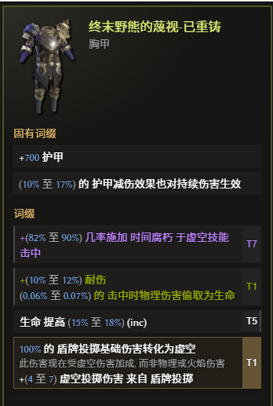
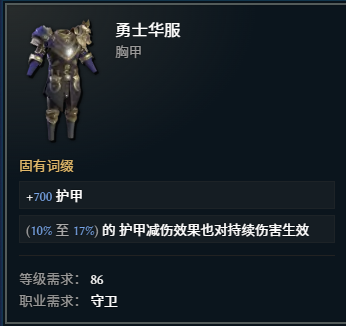
BD启动器 — 必须拥有 100% 盾投转虚空词缀
此胸甲走已重铸路线（非传奇合成），因此可以使用封印机制。顶配玩家将只需T1的"转虚空"词缀用
⚠ 注意：封印词缀不参与传奇合成继承，所以此技巧仅适用于非传奇路线装备。计划用于时空圣殿合成的崇高装备绝不能有封印词缀。
雕纹·绝望封印到独立槽位，腾出前缀位给 T7 时间腐朽几率。
⚠ 注意：封印词缀不参与传奇合成继承，所以此技巧仅适用于非传奇路线装备。计划用于时空圣殿合成的崇高装备绝不能有封印词缀。
封印词缀
封
100% 的 盾牌投掷基础伤害转化为虚空
核心机制，T1即可，必须封印以腾出前缀位
前缀
T7
+(82-90)% 虚空技能时间腐朽几率
核心输出词缀
★
—
终末野熊（重铸）套装词缀
封印后空出的前缀位，由破碎之炉锻造打入
后缀
T5
(15-18)% 生命提高
—
元素抗性 或 力量
次选生存属性
制作路线
1
推荐底材：勇士华服。刷取80+区域，直到掉落拥有 T7 虚空技能时间腐朽几率 的崇高胸甲。
2
若底材同时拥有 盾投转虚空 和 T7 时间腐朽几率，使用雕纹·绝望将盾投转虚空词缀封印（T1时成功率100%），移入独立槽位空出前缀位。若底材有空余前缀，也可手工打上"盾牌投掷基础伤害转化为虚空"词缀（T1即可）——T1词缀不一定非得掉落既有，空出位置手工打上也完全可以。
3
粉碎"终末野熊"套装胸甲获得碎片，将其锻造到胸甲新空出的前缀位上（T1即可），然后用雕纹·绝望将其封印，腾出位置供后续其他词缀使用。
4
使用混沌雕文和剥离符文，将剩余后缀优化为 生命%、元素抗性 等。
5
腐化增值（可选）：词缀完善后尝试腐化，增加第6条强大词缀。
主手武器 — 阿波罗斯的命令（传奇）
主手 · 权杖
阿波罗斯的命令 — 传奇
传奇合成
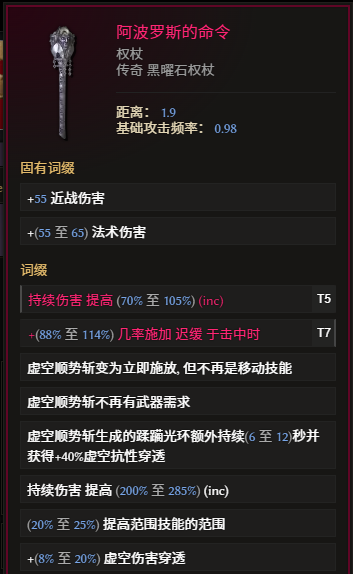
核心作用
当前版本的良性 BUG 受益者。编织者套装的加成效果错误地对传奇词条也生效，
阿波罗斯的命令作为传奇权杖能完美利用这一点，当前版本伤害高于编织者的礼物。
通过传奇合成获得关键的 T7 击中施加迟缓几率。
⚠ 注意：若未来版本修复此 BUG，高 Roll 的编织者的礼物将重新成为输出首选。
⚠ 注意：若未来版本修复此 BUG，高 Roll 的编织者的礼物将重新成为输出首选。
暗金固有属性
虚空顺势斩 +40% 虚空抗性穿透
暗金固有特效，传奇合成后完整保留（当前版本因 BUG 额外受益于编织者套装加成）
持续伤害提高 / 范围技能范围
暗金自带词缀，编织者熔炉洗至高Roll
传奇继承词缀（LP合成）
T7
+(88-114)% 几率施加 迟缓 于击中时
必需后缀，确保Boss满层覆盖
★
T5
持续伤害提高 (70-105)%
LP2+时可额外继承的前缀
制作路线
1
击败阿波罗斯（流亡者时间线Boss也可掉落）获取暗金权杖"阿波罗斯的命令"。在编织者熔炉处消耗锻造潜能将自带词缀洗至高Roll。
2
刷取80+区域，直到掉落一件拥有 T7 击中施加迟缓几率 后缀的崇高权杖。
3
使用混沌雕文和剥离符文优化底材其他词缀为 持续伤害提高、虚空伤害% 等。
4
消耗钥匙进入时空圣殿，在永恒宝箱处，将带有至少1点LP的暗金权杖与崇高权杖合成。
副手武器 — 遗忘骑士之刃（已重铸）
副手 · 细剑（蛇人弯刀基底·推荐）
遗忘骑士之刃 — 已重铸
套装重铸
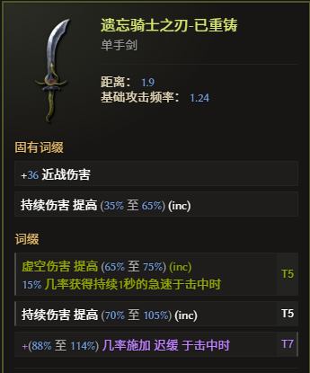
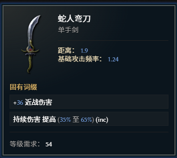
核心作用
提供第二把武器的 T7 击中施加迟缓几率，确保对Boss的满层覆盖。同时作为"遗忘骑士"套装组件，配合护身符激活套装效果。
后缀
T7
+(88-114)% 几率施加 迟缓 于击中时
必需后缀，与主手双迟缓覆盖
★
前缀
T5
持续伤害提高
T5
虚空伤害提高
—
遗忘骑士（重铸）套装词缀
由破碎之炉锻造打入空前缀
制作路线
1
粉碎多余的"遗忘骑士"套装单手剑，获得"遗忘骑士（重铸）"碎片。
2
推荐底材：蛇人弯刀（自带持续伤害加成）。刷取80+区域，直到掉落拥有 T7 击中施加迟缓几率 后缀的崇高细剑。
3
先将套装词缀碎片锻造到空前缀上，然后升级至尽量 T5。
4
将前缀优化为持续伤害提高和虚空伤害提高（尽量T7，T5也可）。
手套 — 光阴锈蚀 / 不朽台钳（传奇切换）
方案A · 输出
光阴锈蚀 — 传奇
传奇
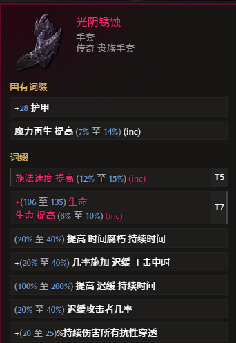
输出方案
提供大量时间腐朽持续时间和所有抗性穿透，是提升输出的核心暗金。
传奇合成词缀
T7
+(153-211) 生命合成目标后缀
T5
施法速度提高次选合成词缀
1
在黑日时间线刷取带有至少1点LP的暗金"光阴锈蚀"手套。
2
刷取80+区域，掉落带有目标T7词缀的崇高手套。
3
在时空圣殿永恒宝箱处合成传奇。
方案B · 生存
不朽台钳 — 传奇
传奇
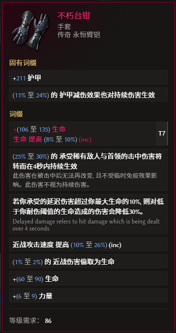
生存方案
不朽台钳的传奇特效将Boss的巨额击中伤害转化为持续伤害。
由于游戏机制中"护甲对持续伤害无效"（模块一），单靠护甲无法防御这类伤害——但配合戒指1"编织者的遗弃壳质"上的词缀
⚠ 核心逻辑链：不朽台钳（击中→持续伤转化）→ 戒指（护甲减伤对持续伤生效）→ 高额护甲覆盖减伤
护甲减伤效果也对持续伤害生效，高额护甲就能同时减免这部分转化后的持续伤害，实现"脸接大锤"的硬度。
⚠ 核心逻辑链：不朽台钳（击中→持续伤转化）→ 戒指（护甲减伤对持续伤生效）→ 高额护甲覆盖减伤
传奇合成词缀
T7
+(106-135) 生命 & (8-10)% 生命提高
复合词缀，合成目标
1
世界掉落刷取带有至少1点LP的暗金"不朽台钳"手套。
2
刷取80+区域，掉落带有T7生命复合词缀的崇高手套。
3
在时空圣殿永恒宝箱处合成传奇。
腰带 — 乔尔曼的焦渴（已重铸）
腰带
乔尔曼的焦渴 — 已重铸
套装重铸
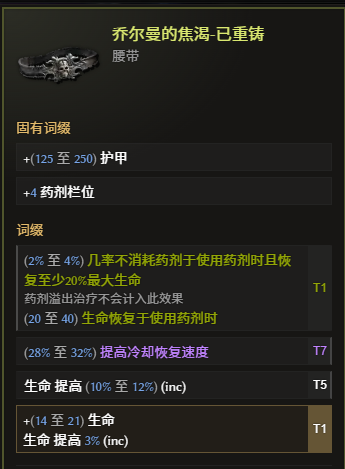
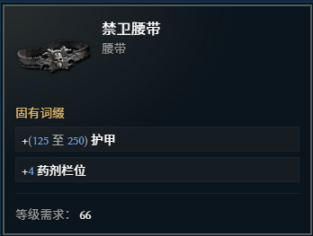
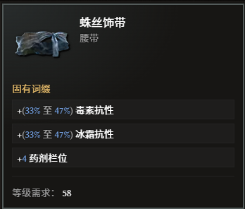
核心作用
提供巨量的 T7 冷却恢复速度，这是缩短"放逐"冷却，实现"投掷-引爆"循环的关键。配合传奇交织戒指激活更多套装效果。
后缀
T7
(28-32)% 提高冷却恢复速度
BD命脉词缀，必需
★
T5
(10-12)% 生命提高
前缀
—
药剂相关 或 力量
次选前缀
—
乔尔曼（重铸）套装词缀
由破碎之炉锻造打入空前缀
制作路线
1
粉碎"乔尔曼"套装腰带，获得套装碎片。
2
刷取80+区域，直到掉落拥有 T7 冷却恢复速度 后缀的崇高腰带。
3
先将套装词缀碎片打到空前缀上。如无前缀空位，可封印一条低阶前缀腾出位置。
4
将其他后缀优化为生命、抗性等词缀。
鞋子 — 山之麓（传奇）
鞋子
山之麓 — 传奇
传奇合成 / 流亡者之靴
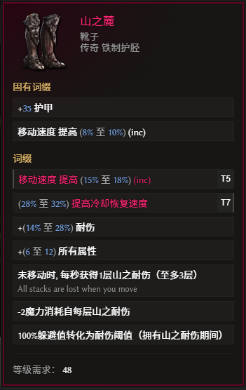
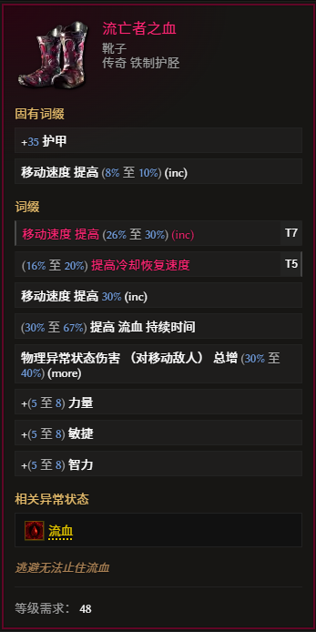
核心作用
提供大量全属性和站桩耐伤效果，并通过传奇合成获得 T7 冷却恢复速度，进一步压缩核心技能冷却。
暗金固有属性
全属性加成 + 站桩耐伤效果暗金固有特效，传奇合成后完整保留
传奇继承词缀
T7
(28-32)% 提高冷却恢复速度
必需后缀
★
T5
移动速度提高
1
击败无光之亭Boss获取"山之麓"，追求带有至少1点LP的版本。
2
刷取80+区域，直到掉落一件拥有 T7 冷却恢复速度 后缀的崇高鞋子。
3
将前缀优化为移动速度提高。
4
在时空圣殿永恒宝箱处合成传奇。
替代选择：流亡者之靴
日常速刷可切换为流亡者之靴，提高跑图速度和灵活性。攻坚时换回山之麓获取全属性和耐伤。
戒指 — 双戒搭配
戒指1 · 蛋白石基底
编织者的遗弃壳质 — 已重铸
套装重铸
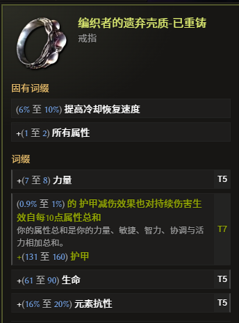
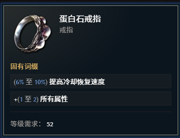
前缀
T7
(0.9-1)% 的 护甲减伤效果也对持续伤害生效 自每10点属性总和
BD生存核心支柱之一，必需
★
T5
+(7-8) 力量
后缀
T5
+(61-90) 生命
T5
+(16-20)% 元素抗性
1
粉碎"编织者"套装戒指，获得碎片。
2
准备崇高戒指（蛋白石基底最佳），先打上套装词缀碎片，将4个词缀打满。
3
使用符文·浩劫随机提升所有未封印词缀等级，有机会将套装词缀roll至 T7（"护甲减伤对持续伤害生效"词缀即为套装词缀本身）。
4
前缀选择力量，后缀找生命、抗性等词缀均可。
戒指2
传奇交织 — 传奇
传奇必备
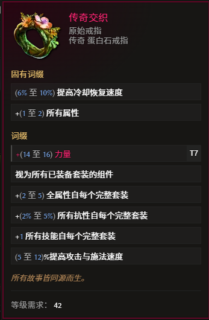
万能套装连接器
传奇特效 "视为所有已装备套装的组件"，轻松激活多个套装的强力效果，是整个BD装备搭配的润滑剂。无可替代的核心暗金。
1
通过裂隙商人兑换，或完成相关预言获取。
2
在编织者秘境中，使用复仇武装为无LP的戒指增加传奇潜能（可选）。
3
若获得带LP版本，可在时空圣殿合成 T7 力量，高优词缀。
护身符 — 遗忘骑士的挂坠（已重铸）
护身符 · 神谕基底
遗忘骑士的挂坠 — 已重铸
套装重铸
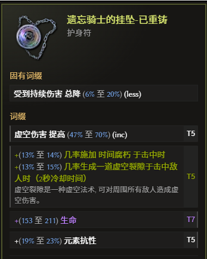
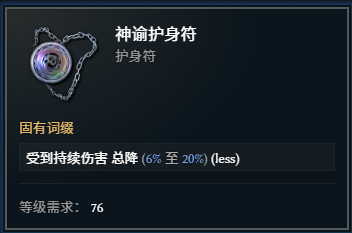
核心作用
提供大量 T7 生命 后缀，补足生存。同时作为"遗忘骑士"套装组件，与副手武器配合激活套装效果。
后缀
T7
+(153-211) 生命
核心生存后缀，必需
★
T5
+(19-23)% 元素抗性
前缀
T5
虚空伤害提高 (47-70)%
T5
+(13-14)% 时间腐朽几率
—
遗忘骑士（重铸）套装词缀
由破碎之炉锻造打入空前缀
1
粉碎"遗忘骑士"套装护身符，获得碎片。
2
刷取80+区域，直到掉落拥有 T7 生命 后缀的崇高护身符（神谕基底最佳）。
3
先将套装词缀碎片打到空前缀上。
4
将其他词缀优化为目标前缀（虚空伤害、时间腐朽几率）和抗性。
遗物 — 破碎世界（传奇）
遗物
破碎世界 — 传奇
传奇合成
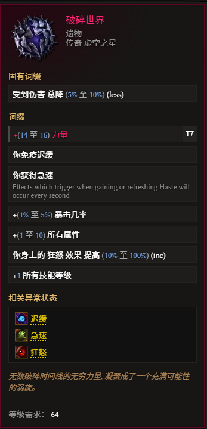
核心作用
提供最高 10% 总降所受伤害 的强大防御特效，并通过传奇合成获得 T7 力量，兼顾生存与输出。
暗金固有属性
最高 10% 总降所受伤害
高层腐化站得住脚的保障
传奇继承词缀
T7
+(14-16) 力量
必需前缀
★
1
击败超波阿波罗斯（命运巨石Boss）获取"破碎世界"，追求带有至少1点LP的版本。
2
刷取80+区域，直到掉落一件拥有 T7 力量 前缀的崇高遗物。
3
将其他词缀优化为全属性、生命%等。
4
在时空圣殿永恒宝箱处合成传奇。
神像祭坛
神像祭坛 · 金字塔基底
金字塔祭坛
随机掉落
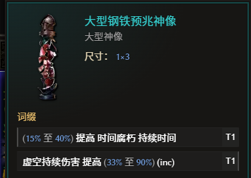
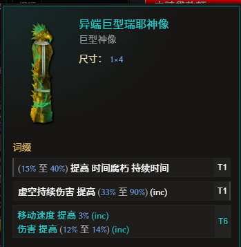
前缀选择 T7 折射栏位神像前缀效果提高 (40-50)%， 配合3巨型神像（前缀堆时间腐朽持续时间）和1预兆神像（对低血量敌人增伤）使用， 是后期伤害质变的关键。
时间腐朽持续时间 = 独立 more 增伤乘区
根据模块五，放逐·流沙结算时，时间腐朽的"持续时间"会转化为独立 more 增伤。
持续时间越长，结算时炸出的伤害越高。目标：每个巨型神像前缀追求 T5+ 的时间腐朽持续时间（+2.0秒以上），
配合祭坛 50% 的折射栏位加成，每个巨型神像实际可贡献约 +3.0 秒的持续时间，三个神像叠加后放逐结算伤害可提升数倍。
神像属性目标
巨型神像后缀补 生命 / 元素抗性，预兆神像选择"对生命值低于20%的敌人伤害提高"用于Boss斩杀阶段。
祝福搭配：黑日（虚空伤害%）、拉贡（魔力上限）、骨龙（迟缓几率）、冰鹿（耐伤阈值）、火灵（基础护甲）。
成型属性目标
生存属性
生命 3500+越高越好，核心生存指标
全抗性 65%+对抗高层腐化中的抗性穿透
耐伤 满（100%）配合低血减伤，抵御猝死
护甲 常驻15000+核心减伤来源，同时对持续伤害生效
暴击伤害减免 80%+防御Boss暴击秒杀
输出属性
迟缓几率 400%+直接影响时间腐朽的触发和叠层速度
头、胸：T7 虚空技能时间腐朽几率核心触发词缀，双部位必备
冷却恢复速度 — 放逐冷却 2.5秒以内面板放逐冷却时间压缩至2.5秒内，保证输出循环频率
关键工具速查表
| 操作目的 | 所需工具/场所 | 获取途径/说明 |
|---|---|---|
| 粉碎套装获得碎片 | 破碎之炉 | 编织者阵营解锁，位于雄伟大桥秘境终点 |
| 随机洗掉一条词缀 | 混沌雕文 | 世界掉落、预言兑换、无光森林宝库 |
| 移除一条词缀（获得碎片） | 剥离符文 | 世界掉落、预言兑换、无光森林宝库 |
| 升级词缀时节省FP | 希望雕文 | 世界掉落、预言兑换、无光森林宝库 |
| 将词缀封印至独立槽位 | 雕纹·绝望 | 世界掉落，用于崇高/已重铸装备，暗金和套装无效 |
| 给暗金增加LP | 复仇武装 | 编织者秘境，需要消耗稳定值 |
| 重铸暗金属性Roll值 | 编织者熔炉 | 编织者阵营解锁，消耗大量锻造潜能 |
| 传奇合成 | 时空圣殿永恒宝箱 | 消耗时空圣殿钥匙（100级地图Boss概率掉落）进入 |
| 随机提升所有未封印词缀等级 | 符文·浩劫 | 第四赛季核心工具，套装词缀可被roll至T6/T7，用于伤害类高阶套装词缀打造 |
| 为装备增加随机腐化词缀 | 腐化 | 在"被遗忘的骑士"时间线或特定秘境与腐化神龛互动，结果不可逆 |
腐化使用提醒
腐化是终极豪赌，结果完全随机——可能大赚（新增腐化词缀、提升词缀等级）也可能巨亏（移除词缀、降低稀有度）。
请务必在装备用标准工艺制作到最佳状态后再考虑腐化，切勿在关键装备上轻易尝试。